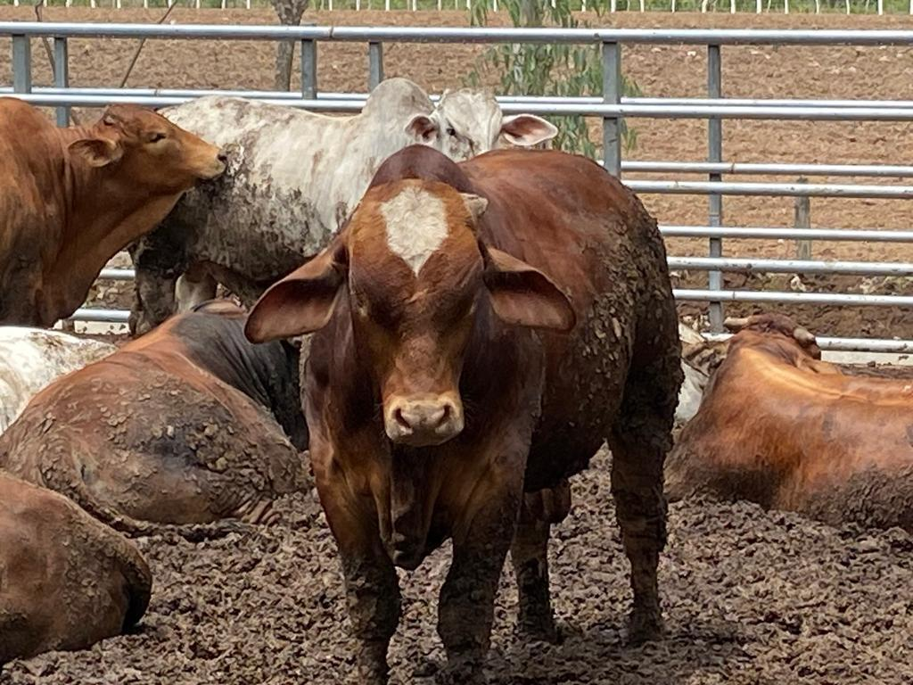
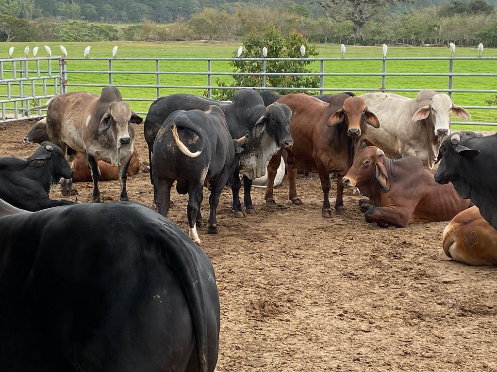
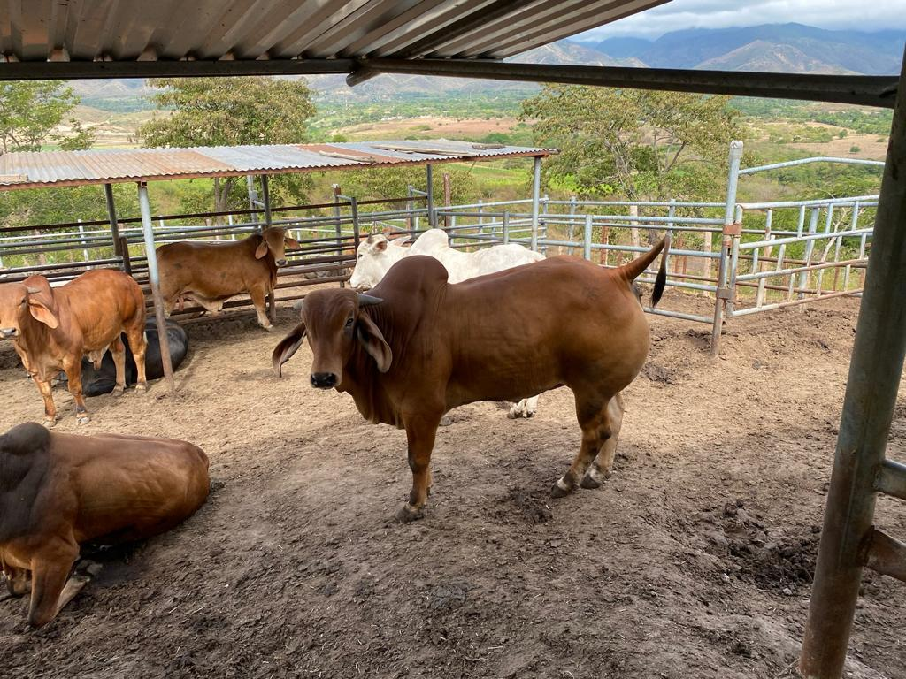

<div class="slider-animals" aria-roledescription="carousel">
  <div class="slider-scrim"></div>
  <div class="slider-progress" aria-hidden="true"><span></span></div>

  <button class="slider-btn prev" aria-label="Imagen anterior">
    <i class="fa-solid fa-chevron-left"></i>
  </button>
  <button class="slider-btn next" aria-label="Imagen siguiente">
    <i class="fa-solid fa-chevron-right"></i>
  </button>

  <div class="slider-stage" aria-live="polite">
    <!-- Slide 1 -->
    <figure class="slide active" data-title="Bovino" data-tags="Leche, Pastura">
      
      <figcaption class="slide-caption">
        <div class="caption-main">
          <h3><i class="fa-solid fa-cow"></i> Bovino</h3>
          <div class="chips">
            <span class="chip"><i class="fa-solid fa-weight-hanging"></i> Engorde</span>
            <span class="chip"><i class="fa-solid fa-bowl-food"></i> Balanceado</span>
          </div>
        </div>
      </figcaption>
    </figure>

    <!-- Slide 2 -->
    <figure class="slide" data-title="Aves de corral" data-tags="Ponedora, Grano">
      
      <figcaption class="slide-caption">
        <div class="caption-main">
        <h3><i class="fa-solid fa-cow"></i> Bovino</h3>
          <div class="chips">
            <span class="chip"><i class="fa-solid fa-weight-hanging"></i> Engorde</span>
            <span class="chip"><i class="fa-solid fa-bowl-food"></i> Balanceado</span>
          </div>
        </div>
      </figcaption>
    </figure>

    <!-- Slide 3 -->
    <figure class="slide" data-title="Porcino" data-tags="Engorde, Balanceado">
      
      <figcaption class="slide-caption">
        <div class="caption-main">
        <h3><i class="fa-solid fa-cow"></i> Bovino</h3>
          <div class="chips">
            <span class="chip"><i class="fa-solid fa-weight-hanging"></i> Engorde</span>
            <span class="chip"><i class="fa-solid fa-bowl-food"></i> Balanceado</span>
          </div>
        </div>
      </figcaption>
    </figure>

    <!-- Agrega más slides si lo necesitas -->
  </div>

  <!-- Dots -->
  <div class="slider-dots" role="tablist" aria-label="Ir a imagen">
    <button class="dot active" role="tab" aria-selected="true" aria-label="1"></button>
    <button class="dot" role="tab" aria-label="2"></button>
    <button class="dot" role="tab" aria-label="3"></button>
  </div>

  <!-- Thumbs -->
  <div class="slider-thumbs" aria-label="Miniaturas">
    <button class="thumb active"></button>
    <button class="thumb"></button>
    <button class="thumb"></button>
  </div>
</div>

<style>
:root{
  --h: 620px;
  --radius: 22px;
  --shadow: 0 12px 40px rgba(0,0,0,.25);
  --glass-bg: rgba(255,255,255,.12);
  --glass-brd: rgba(255,255,255,.35);
  --ink: #0f1220;
}

.slider-animals{
  position:relative;
  width:100vw;
  margin-left:calc(-50vw + 50%);
  height:var(--h);
  display:grid;
  grid-template-rows: 6px 1fr auto auto;
  align-items:center;
  overflow:hidden;
  isolation:isolate;
  background:#0b0e19;
  color:#fff;
  user-select:none;
  justify-content: center;
  align-items: center;

}

/* Fondo con degradado animado + blur (simula color dominante) */
.slider-scrim{
  position:absolute; inset:0;
  background:
    radial-gradient(1200px 600px at 10% 20%, #3a51ff33, transparent 60%),
    radial-gradient(1000px 600px at 90% 80%, #ff3a7a33, transparent 60%),
    linear-gradient(120deg, #0b0e19 0%, #111633 50%, #0b0e19 100%);
  filter: blur(28px) saturate(1.2) brightness(.9);
  z-index:0;
  animation: hue 18s linear infinite;
}
@keyframes hue { to { filter: blur(28px) saturate(1.2) brightness(.9) hue-rotate(360deg);}}

/* Barra de progreso autoplay */
.slider-progress{ position:relative; z-index:2; height:6px; background:rgba(255,255,255,.12); overflow:hidden;}
.slider-progress span{ display:block; height:100%; width:0%; background:#fff; opacity:.85; transition:width .1s linear;}

/* Stage */
.slider-stage{
  position:relative; z-index:2;
  display:grid; place-items:center;
  width:min(940px, 92vw); height:calc(var(--h) - 150px);
}
.slide{
  position:absolute; inset:0; margin:auto;
  width:100%; height:100%;
  border-radius:var(--radius);
  overflow:hidden; box-shadow:var(--shadow);
  opacity:0; transform: scale(.985);
  transition: opacity .6s ease, transform .8s cubic-bezier(.2,.8,.2,1);
  will-change: opacity, transform;
}
.slide.active{ opacity:1; transform: scale(1); z-index:3; }
.slide img{
  width:100%; height:100%; object-fit:cover;
  transform: scale(1.06); /* Ken Burns leve */
  transition: transform 6s ease;
}
.slide.active img{ transform: scale(1.12); }

/* Caption “glass” */
.slide-caption{
  position:absolute; left:18px; bottom:18px; right:18px;
}
.caption-main{
  display:flex; gap:14px; align-items:center; flex-wrap:wrap;
  backdrop-filter: blur(10px);
  -webkit-backdrop-filter: blur(10px);
  background:var(--glass-bg);
  border:1px solid var(--glass-brd);
  border-radius:16px; padding:10px 14px;
}
.caption-main h3{ margin:0; font-size:clamp(14px, 3vw, 20px); font-weight:700;}
.chips{ display:flex; gap:8px; flex-wrap:wrap;}
.chip{
  font-size:12px; padding:6px 10px; border-radius:999px;
  background:rgba(255,255,255,.16); border:1px solid rgba(255,255,255,.25);
  display:inline-flex; gap:6px; align-items:center;
}

/* Botones */
.slider-btn{
  position:absolute; top:50%; transform:translateY(-50%);
  z-index:3; border:0; width:48px; height:48px; border-radius:999px;
  display:grid; place-items:center; cursor:pointer;
  color:#fff; background:rgba(17,22,51,.55);
  backdrop-filter: blur(6px);
  transition: transform .15s ease, background .2s ease, opacity .3s;
}
.slider-btn:hover{ transform: translateY(-50%) scale(1.05); background:rgba(17,22,51,.75);}
.slider-btn.prev{ left:20px;} .slider-btn.next{ right:20px;}

/* Dots */
.slider-dots{
  z-index:3; display:flex; gap:10px; justify-content:center; padding:14px 0;
}
.dot{
  width:10px; height:10px; border-radius:50%;
  background:rgba(255,255,255,.35); border:none; cursor:pointer;
  transition: transform .2s, background .2s;
}
.dot.active{ background:#fff; transform:scale(1.25); }

/* Thumbs */
.slider-thumbs{
  z-index:3; display:flex; gap:10px; padding:10px 16px 18px;
  overflow:auto; justify-content:center;
}
.thumb{
  border:none; padding:0; background:transparent; cursor:pointer; border-radius:12px;
  outline:1px solid transparent; transition:outline-color .2s, transform .2s;
}
.thumb img{
  width:86px; aspect-ratio: 16/10; object-fit:cover; border-radius:12px;
  display:block; filter:saturate(.9) contrast(1.05);
}
.thumb:hover{ transform: translateY(-2px);}
.thumb.active{ outline-color: rgba(255,255,255,.6); }

/* Responsive */
/* MÓVIL: centrar el slider y las imágenes */
@media (max-width: 768px){
  /* quita el full-bleed que empuja a la izquierda */
  .slider-animals{
    width: 100%;
    margin-left: 0;
    padding-inline: 0;       /* <-- antes tenías 12px */
    justify-content: center;
    align-items: center;
  }

  /* el escenario y las tarjetas ocupan el ancho disponible y se centran */
  .slider-stage{
    width: 100%;
    max-width: 100%;
    display: grid;
    place-items: center;
  }

  /* el slide se centra y deja un “gutter” para que no pegue a los bordes */
  .slide{
    position: relative;          /* ya no absolute */
    width: 100%;
    max-width: 640px;            /* opcional: límite bonito */
    margin: 0 auto;              /* centrado horizontal */
  }

  /* como el slide ya no es absolute, evita solaparse */
  .slider-stage .slide:not(.active){ display: none; }
  .slider-stage .slide.active{ display: block; }

  /* botones y controles dentro del ancho visible */
  .slider-btn.prev{ left: 12px; }
  .slider-btn.next{ right: 12px; }

  .slider-thumbs{ padding-inline: 12px; }
}

/* 2) Resetea el margen por defecto de <figure> */
figure.slide{
  margin: 0 !important;      /* evita los 40px del user agent */
}


/* EXTRA: muy pequeño */
@media (max-width: 520px){
  .slide{ max-width: 520px; }
}

/* Ya que en móvil hiciste el slide 'position: relative', céntralo sin margen extra */
@media (max-width: 768px){
  .slide{
    position: relative;
    width: 100%;
    max-width: 640px;
    margin: 0 auto !important;  /* centra y elimina cualquier margen lateral */
    display: block;
  }

  /* Si quieres, deja un pequeño respiro a los thumbs, no al contenedor */
  .slider-thumbs{ padding-inline: 12px; }
}
/* Respeto a usuarios con reducción de movimiento */
@media (prefers-reduced-motion: reduce){
  .slide, .slide img, .slider-btn, .dot, .thumb{ transition:none !important; animation:none !important; }
}
</style>


